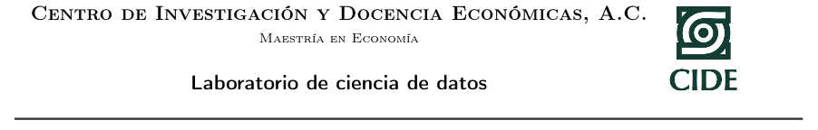

Información del curso¶
La presente página está destinada para el laboratorio de la asignatura: Introducción a la ciencia de datos. Asignatura obligatoria del programa de Maestría en economía (generación 2020-2022), del Centro de Investigación y Docencias Economicas, A.C.
El laboratorio será impartido por:
Rafael Martínez Martínez
mailto:rafael.martinez@alumnos.cide.edu
Federico Daverio
mailto:federico.daverio@alumnos.cide.edu
Cualquier duda o aclaración los laboratoristas están a disposición por medio de estos correos institucionales.
Material¶
Los laboratorios serán grabados y estarán disponibles (es necesario el correo institucional) en el siguiente enlace
El material de los laboratorios se puede descargar, y también se puede ejecutar en línea
Pueden encontrar el material de los laboratorios organizado en la barra de navegación lateral de izquierda
Cuestionario diagnostico¶
Tareas¶
Las tareas tendrán que ser entregadas como link a una página Github personal en los tiempos y formas especificadas por el profesor durante la clase. La tareas entregadas tarde recibirán una penalización.
El sistema de calificación de las tareas será el siguiente:
Sobresaliente [100] |
Bueno [85-95] |
Regular [80-70] |
Pobre [50-60] |
No aceptable [0-40] |
|
|---|---|---|---|---|---|
|
El programa funciona correctamente y todas las variables de entrada están validadas. |
En algunos casos particulares no funciona el programa las variables de entrada están validadas. |
Sólo funciona en casos específicos las variables no están validadas y las condiciones no son correctas. |
En algunos casos no funciona el programa y no hay validación de datos. |
No funciona ningún caso. |
|
Es un código compacto muy depurado. |
El programa contempla todas las condiciones no es compacto. |
El programa contempla algunas de las condiciones y no es compacto. |
El programa no es depurado repite partes de código y no contempla todas la partes de las condiciones. |
No hay razonamiento lógico. |
|
La presentación incluye el nombre, los apellidos, la carrera, nombre del profesor especialidad, nombre de la institución y matrícula, objetivos bien definidos documentados y partes del código bien documentado. |
Le faltan algunos datos presentación, nombre del profesor especialidad, y nombre de la institución, matrícula los objetivos no están completos define bien el código en la documentación. |
La presentación está incompleta, la carrera, nombre del profesor especialidad, y nombre de la institución, matrícula objetivos no define bien el código en la documentación. |
No tiene presentación no tiene objetivos no define bien el código en la documentación. |
No es aceptable la documentación. |
Rúbrica base enlace